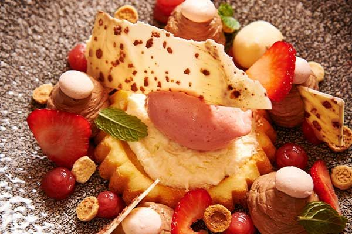
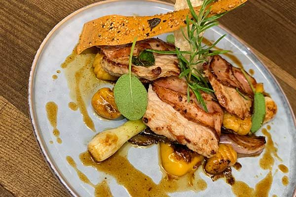
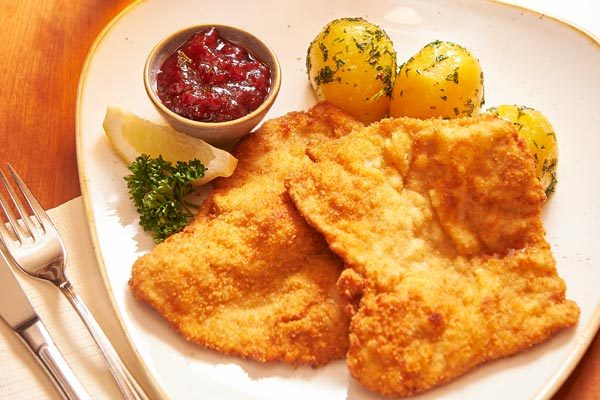
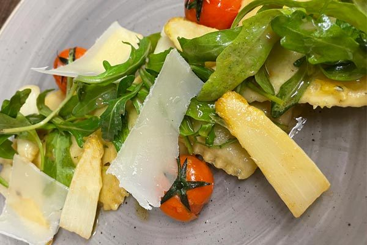

Alles auf einen Blick
Standardkarte, Tageskarte, Mittagskarte und Pizzakarte – hier direkt lesbar statt als PDF-Download. Wir erneuern unsere Karte regelmäßig und kochen saisonale Spezialitäten.
| Mittwoch–Freitag | 11:00–13:30 Uhr und 16:30–21:00 Uhr |
|---|---|
| Samstag | 11:00–21:00 Uhr |
| Sonntag | 08:00–14:00 Uhr |
| Mittagskarte | Mittwoch–Freitag 11:00–13:30 Uhr, solange der Vorrat reicht |
| Pizza | Freitag & Samstag ab 17:00 Uhr |
Portionen, Beilagen, Wünsche
- Alle Gerichte können auch als kleine Portion bestellt werden – € 1,00 weniger.
- Alle Salate werden mit unserem Hausdressing serviert; auf Wunsch marinieren wir gerne mit Balsamico-Dressing oder Essig-Öl.
- Unsere Cremesuppen finden Sie in der Tageskarte.
- Ob deftig oder leicht, vegetarisch und vegan, Fisch oder Fleisch – für jeden ist das Richtige dabei.
Die Karte des Hauses
Innviertler Klassiker, die es das ganze Jahr über bei uns gibt.
Kräftiges aus dem Suppentopf
- Rindssupperl mit hausgemachtem Kaspressknödel€ 6,50
- Rindssupperl mit gebackenem Leberknödel€ 5,90
- Rindssupperl mit Fleischstrudel€ 5,20
- Rindssupperl mit Frittaten€ 4,90
Knackige Salate
- Backhendlsalat€ 14,80
verschiedene Blattsalate, Karotten, Zuckermais, Tomaten, Eierspalten und gebackene Hühnerbruststreifen „Wiener Art“
- Putensalat€ 13,80
verschiedene gemischte Salate und Blattsalate mit Tomaten, Eierspalten und gebratenen Putenstreifen
- Chefsalat€ 12,80
verschiedene Blattsalate mit Tomaten, Karotten, Eierspalten, Mais, Schinken und Käsestreifen
- Haussalat€ 12,80
verschiedene Blattsalate, Karotten, Tomaten und gebackene Zucchini und Champignons
- Bierbrauersalat€ 12,80
gekochte Rindfleisch-, Extrawurst-, Schinken- und Käsestreifen mit Zwiebeln, Tomaten und Blattsalaten
- Gemischter Beilagensalat€ 4,20
- Ofenfrisches Salz- oder Mohnstangerl€ 1,80
Besonders gut
- Wiener Schnitzel
Petersilkartoffeln, Preiselbeeren, Zitrone und gemischter Salat
vom heimischen Kalb€ 25,50von der Putenbrust€ 16,90vom Schweinskarree€ 15,90 - Cordon Bleu
Pommes, Preiselbeeren, Zitrone und gemischter Salat
von der Putenbrust€ 17,90vom Schweinskarree€ 16,90 - Rosa Zwiebelrostbraten€ 26,50
250 g Rostbraten vom Innviertler Rind, Röstkartoffeln, Speckbohnen, kräftige Zwiebel-Senfsauce, gemischter Salat
- Grillteller€ 19,50
kleine Steaks von Pute, Rind und Schwein, Grillwürstel, gegrillter Speck, Grillgemüse, Pommes, Kräuterbutter und gemischter Salat
Jause & Kleinigkeiten
- Sauwaldjause (nur im Sommer)€ 12,50
a typische Innviertler Brettljausn – von überall a bissl was
- Rindfleischsalat€ 13,80
gekochtes Rindfleisch vom Schardenberger Jungrind mit Zwiebeln, Balsamicodressing, Tomaten, Eierspalten, fein garniert
- Handgedrehte Berner Würstel€ 11,90
mit Pommes und gemischtem Salat
- Schweizer Wurstsalat€ 9,80
Extrawurst- und Käsestreifen mit Zwiebeln in Essig-Öl, Tomaten, Eierspalten, Blattsalate, fein garniert
- Oma’s Kalbsbeuscherlohne Beilage€ 7,50mit Semmelknödel€ 9,50
- Essigwurst (nur im Sommer)€ 6,90
Speckknacker mit Zwiebeln, Tomaten, Blattsalat, fein garniert
- Frankfurter oder Debreziner€ 6,50
Senf, Kren, Stangerl
- Schinken- oder Käsestangerl€ 4,70
- Schinken-Käse-Toast€ 3,80
1 Stück
- Handsemmel oder Scheibe Hausbrot€ 0,90
In der Rein – auf Vorbestellung
- Bratl in der Rein€ 15,90 p. P.
Sur, Schopf und Krustenbraten, Semmelknödel, Bratkartoffeln, Stöckelkraut, mitgebratenes Gemüse und Rahmradi
- Brustspitz Surripperl€ 14,90 p. P.
gebratene Brustspitz Surripperl mit Kümmelkartoffel und Sauerrahmdip
- Schnitzelrein€ 17,90 p. P.
verschiedene kleine Schnitzerl (Sur, Pute, Schwein) und saisonal gefüllte Schnitzel mit Reis, Kartoffel und Wedges, Schinken-Käse-Röllchen, gebackenes Gemüse, Salat und Käsesauce
- Spare Ribs & Wings€ 17,50 p. P.
12 h gegarte BBQ-Spare-Ribs, gebratene Hendlflügerl mit Kartoffelspalten, Cole Slaw, Sauerrahmdip
Für unsere kleinen Gäste
- Kinderschnitzel€ 8,80
Schnitzel „Wiener Art“ vom Schwein mit Pommes und kleiner Salatgarnitur
- Grillwürstel€ 8,20
2 Stück gegrillte Frankfurter mit Pommes und kleiner Salatgarnitur
Süßes für danach
- Eispalatschinken€ 8,50
mit Vanilleeis, Schokosauce, Schlagobers und frischen Früchten
- Hausgemachte Kuchen und Torten€ 3,80 / € 4,20
fragen Sie unser Servicepersonal
- Frischer Palatschinken€ 3,70 / Stk.
wahlweise mit Nutella oder hausgemachter Marillen-, Erdbeer- oder Johannisbeermarmelade
- Selbstgemachtes Eis und Sorbet€ 2,90
pro Kugel – fragen Sie unser Servicepersonal
Was gerade Saison hat
Die Tageskarte wechselt regelmäßig – hier die aktuelle Zusammenstellung aus Vorspeisen, Hauptspeisen und Desserts.
Vorspeisen
- Rindercarpaccio€ 14,90
Parmesan, Rucola, kaltgepresstes Olivenöl, gebratene Champignons, Toastbrot und Butter
- 3 Stk. gebackene Garnele€ 9,50
Asia-Krautsalat, Wasabimayonnaise
- Kürbiscremesuppe
Obers und Croutons
Suppe€ 6,50zusätzlich 1 Stk. gebackene Garnele€ 8,50
Dessert
- Hausgemachte Marillenknödel€ 8,90
süße Brösel, Marillenröster, hausgemachtes Vanilleeis
- Crème Brûlée€ 4,20
frische Früchte
- Tiramisu im Glas€ 4,20
Hauptspeisen
- Serbischer Rostbraten€ 23,50
von der Innviertler Beiried, gefüllt mit Speck, Zwiebeln, Gurkerl und Käse, Paprikareis, Wedges, gemischter Salat
- Fischteller€ 23,50
gebratene Lachsforelle vom Friedl, gebratener Zander & Garnele, Grillgemüse, Parmesankroketten, Weißweinschaum, gemischter Salat
- Waliser Schnitzel€ 21,50
vom Schwein, gefüllt mit Schinken, Käse und Champignons, Butterreis, würzige Käsesauce, gemischter Salat
- Gebackenes Surschnitzerl€ 19,50
Serviettenknödel, Petersilkartoffeln, Rahmsauce, gemischter Salat
- BBQ Spare Ribs€ 18,50
butterweiche Spare Ribs, Wedges, Sauerrahmdip, Cole Slaw
- BBQ Burger€ 17,90
200 g Rinderpatty, knuspriger Speck, würziger Cheddar, BBQ-Sauce, Cole Slaw, Röstzwiebeln, Curly Fries, Sauerrahmdip
- Eierschwammerl in Rahmsauce€ 17,90
Serviettenknödel, gemischter Salat
- Falafel Burger€ 15,50
Sesam-Bun, hausgemachte Falafel, Hummus, Tomatensalsa, eingelegte rote Zwiebeln, Rucola, Curly Fries, Sauerrahmdip
- Herbstlicher Nudelteller
cremige Kürbistagliatelle, Pfannengemüse, geröstete Kürbiskerne
pur€ 14,50mit gebratenen Hühnerbruststreifen€ 18,50mit gebratenen Garnelen€ 19,50 - Schinken-Käse-RöllchenPommes, kleiner Salat, Sauce Tartar€ 13,50auf buntem Salatteller€ 13,50
Mittwoch bis Freitag, 11:00–13:30 Uhr
Solange der Vorrat reicht. Weitere Gerichte finden Sie in der Standardkarte.
Menüpreise
- Hauptspeise solo€ 11,50
- Suppe & Hauptspeise€ 12,90
- Hauptspeise & Dessert€ 13,50
- Mittagsmenü komplett€ 16,90
Suppe, Hauptspeise und Dessert
- Suppe einzeln€ 3,50
kräftige Rindssuppe mit Spinatroulade oder Grießnockerl · Basilikumsuppe mit Obers und Croutons
- Kleiner Mittagssalat€ 3,20
Kartoffel, Kraut, Karotten, Blattsalate, Tomate
- Dessert einzeln€ 3,80
Tiramisu · frische Früchte · Tageskuchen
Wochen-Special & Tagesgerichte
- Wochen-Special: gekochter Tafelspitz€ 16,–
Röstkartoffeln, Semmelkren, Wurzelgemüse
- Mittwoch: Esterhazy Rostbraten vom Schwein
Juliennegemüse, Spätzle, Speckbohnen
- Mittwoch: Kürbis-Lasagne
kleiner Salat
- Donnerstag: Gyros Geschnetzeltes
Paprikareis, Kartoffelspalten
- Donnerstag: Hausgemachte Quiche
Rucola, Parmesan
- Freitag: Falsches Cordon Bleu
Kartoffeln, kleiner Salat
- Freitag: Falafelwrap
Wedges, Sauerrahmdip
Freitag & Samstag ab 17:00 Uhr
Alle Pizzen mit Fior di Latte Mozzarella.
Unsere Pizzen
- Margherita€ 9,90
Tomatensauce, Fior di Latte Mozzarella, frischer Basilikum
- Fantasia€ 12,90
Tomatensauce, Fior di Latte Mozzarella, Gorgonzola, Tomatenscheiben, Rucola, Knoblauch, Parmesan
- Spinacci€ 12,50
Tomatensauce, Fior di Latte Mozzarella, Schafskäse, Spinat, getrocknete Tomaten, Oliven
- Funghi€ 11,50
Tomatensauce, Fior di Latte Mozzarella, Champignons
- Salami€ 12,50
Tomatensauce, Fior di Latte Mozzarella, Salami
- Umbra€ 13,90
Tomatensauce, Fior di Latte Mozzarella, Schinken, Salami, Zwiebeln, Mais
- Lorenzo€ 12,90
Tomatensauce, Fior di Latte Mozzarella, Salami, Speck, Champignons, Pfefferoni
- Speziale€ 13,80
Tomatensauce, Fior di Latte Mozzarella, Pepperoni-Salami, Zwiebeln, Kapern, Sardellen, Kalamata-Oliven
- Capricciosa€ 12,50
Tomatensauce, Fior di Latte Mozzarella, Schinken, Champignons
- Diavolo (scharf)€ 11,80
Tomatensauce, Fior di Latte Mozzarella, Pepperoni-Salami, scharfe Pfefferoni, Chili
- Sauwaldpizza€ 13,50
Tomatensauce, Fior di Latte Mozzarella, Speck, Zwiebeln, Champignons, Mais
- Americaner€ 14,50
Tomatensauce, Fior di Latte Mozzarella, Schinken, Salami, Speck, Zwiebeln, Mais, Ei
- Hauspizza€ 12,90
Tomatensauce, Fior di Latte Mozzarella, Schinken, Salami, Artischocken, Zwiebeln
- San Daniele€ 14,80
Tomatensauce, Fior di Latte Mozzarella, Prosciutto, Rucola, Parmesanspäne
- Al Tonno€ 13,80
Tomatensauce, Fior di Latte Mozzarella, Thunfisch, Zwiebeln
- Caprese€ 12,50
Tomatensauce, Fior di Latte Mozzarella, Kirschtomaten, Basilikumpesto, Rucola, Parmesan
Specials
- Frutti di Mare€ 15,50
Tomatensauce, Fior di Latte Mozzarella, Muschelfleisch, Garnelen, Calamari, Tomaten, Knoblauch
- Kürbispizza€ 15,50
Tomatensauce, Fior di Latte Mozzarella, Hokkaidokürbis, Rucola, Schafskäse, rote Zwiebeln, Walnüsse
- Mortadella€ 15,50
Tomatensauce, Fior di Latte Mozzarella, Mortadella, Pistazien, Burrata
Extras
- Knoblauch- oder Chiliölkostenlos
- Salami, Schinken, Speck, Artischocken, Oliven, Mais, Zwiebeln, Rucola, Champignon, Jalapeños, Spinat, getrocknete Tomaten, Pfefferoni€ 1,50
je Zutat
- Parmesan, Gorgonzola, Ei, Sardellen€ 2,50
je Zutat
- Thunfisch€ 3,50

Täglich frisch, saisonal gedacht
Wir erneuern wöchentlich unsere Speise- und Getränkekarte. Hausgemachte Säfte, saisonale, gesunde und deftige Gerichte und Themenwochen lassen keine Wünsche offen. Die großen Räumlichkeiten bieten viel Platz für noch mehr Genussmomente.
„Wir verwöhnen Sie mit g’schmackiger Innviertler Kost, typisch österreichischen Speisen und g’sunden Schmankerln, die mit saisonalen Schwerpunkten – täglich frisch für Sie zubereitet werden.“ — Alex Wösner


